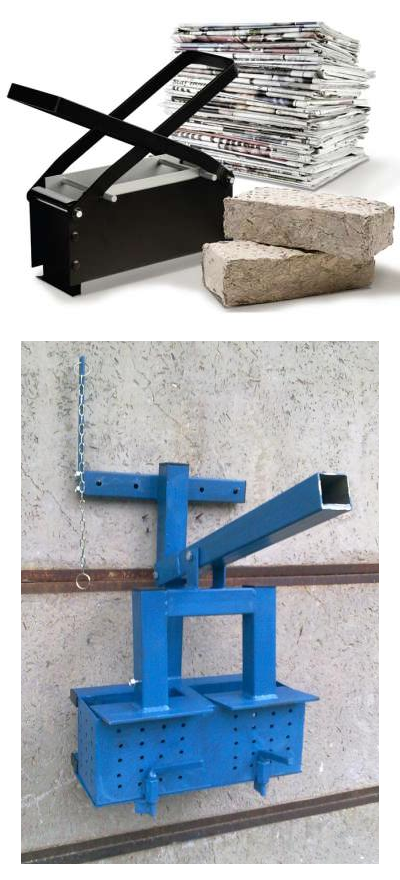

Előkészítés
Legmegfelelőbb természetesen a kartondoboz, a kemény papírok és a hagyományos fekete-fehér újság,
amely a divatos magazinokkal szemben kevés fényes lapot és színes festéket tartalmaz.
-

Fázis1: Ha idegen anyagot látunk a papíron (ragasztó, fémkapocs...), azt a felhasználás
előtt el kell
távolítani.
- Fázis2: Ezt követően érdemes apróbb darabokra vágni a papírlapokat, hogy egyszerűen
dolgozhassunk velük. Legpraktikusabb, ha iratmegsemmisítővel le tudjuk darálni a papírt, így
bizalmas adatokat tartal-mazó feleslegessé vált papírjaink is remek alapanyagul szolgálhatnak.
- Fázis3: Szükségünk lesz egy edényre (vödör, hordó...), amiben az áztatást végezzük. Nem
szükséges ivóvizben áztatni, esővíz vagy kúvíz is tökéletesen megfelel, és az áztatóvíz többször
is újrahasználható.
- Fázis4: Több leírás fúrógépre szerelt keverőszárat is javasol, de ha nem akarunk villamos
áramot felhasználni a készítéshez, akkor megnövelt áztatási idő mellett egy pár gumikesztyű is
megteszi.
|